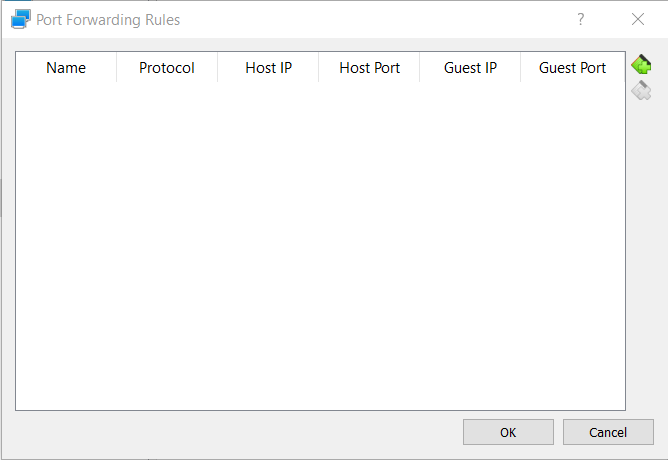

How to ssh into VMware Player/VirtualBox (*BSD/Linux guest from Windows host)
This is a guide for setting up ssh into a virtual machine with *BSD/Linux host on a Windows host. Depending on the VM you are using, refer to the instructions below.
Installation
Firstly, install the vm of choice, then proceed to create the vm and install the guest os. In this guide, I will not go into details of the installation process. However the important thing is make sure openssh server is installed and enabled on the guest os.
Prerequisites
Install VM of choice.
Install desired OS in VM.
Install and make sure openssh is running.
Make sure there is an account to ssh into, (not including root account, root account requires extra config, default ssh do not allow root logins).
VirtualBox
We will start off with VirtualBox since this is slightly easier to configure. Go below for instructions for VMware Player.
Setting up SSH access to a VirtualBox host is relatively easy. Just select the vm, go into Settings > Network > Adapter 1 > Port Forwarding. To use port forwarding, ensure the network is attached to NAT.
Clicking on portforwarding will open this window.
Click on add new rule with the following settings
VMware Player
Setting up portforwarding on VMware player requires a little more work as VMware does not have an UI tool to do this.
To start, we have to edit the following file C:\ProgramData\VMware\vmnetnat.conf with admin rights, interestingly in the file, there is a sample line on how to configure for several web services including SSH. Find for the line SSH and edit it to look something like this.
<port> = <guest ip>:<ssh port> 4422 = 192.168.122.128:22 where port is the port to be exposed on the host machine, and guest ip is the ip address of the guest. ssh port should be default at 22.
Once the file is saved, make sure to restart the following service, either using the command line below
or using services.msc with the service name, VMware NAT Service.
SSH into VM
Once the above is done done, start the VM and connect to it via the following command
ssh -p <port set earlier, e.g. 2244> <myusername>@localhost # An example of connecting to my created username david at port 2244 ssh -p 2244 david@localhost
Credits to Stanley for the medium post.